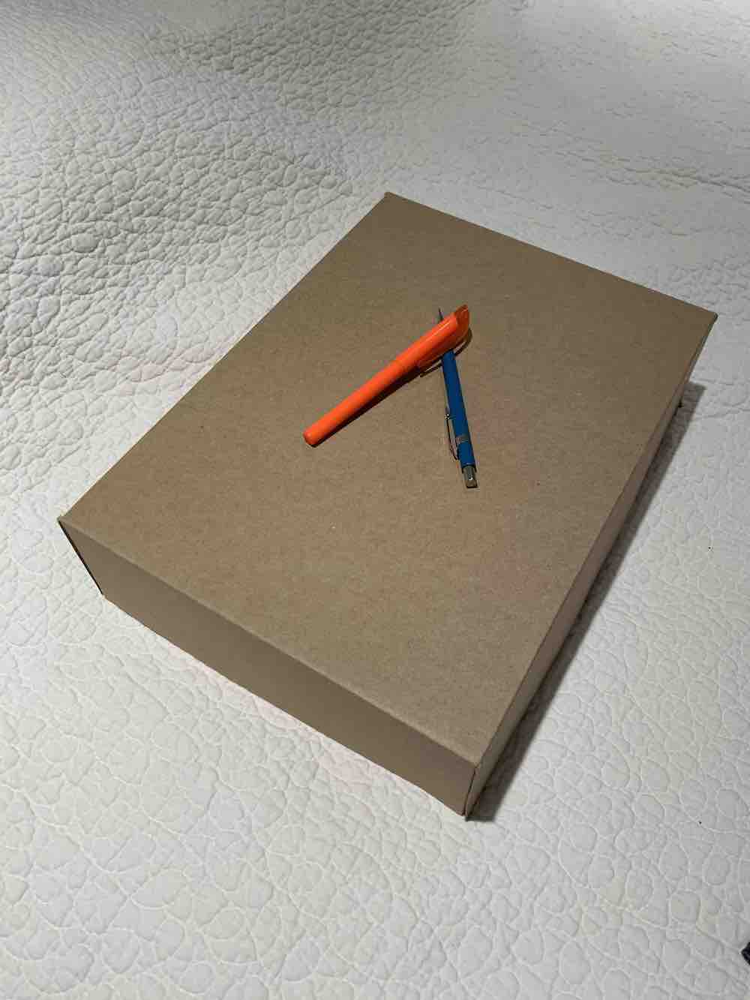
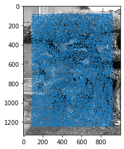

**This is from a UC Berkeley course project, so the source code is not publicly viewable. If you are an employer interested in viewing my project code, please contact me privately.**
I computed the homography matrix H using the formula p' = H p for corresponding points p and p' in each of the images. Because H has 8 degrees of freedom, we only need 4 corresponding (x, y) pixel points to solve, but the homography result is better if we choose more correspondences and use least squares to solve. Rectification is done by warping the image using the homography matrix to transform onto coordinates of a known rectangle.
| Original | Rectified |
|

|
|
|
|
|
In this part, I created mosaics by aligning two overlapping images taken from the same position but at a different angle. Instead of computing the homography matrix between 4 points on the image and known coordinates of a rectangle, I manually defined 6 corresponding points from each image of the mosaic to compute the homography matrix between. I determined the size of the new image by transforming the corners of the left image and taking the difference between the maximum width/height of the right image and the minimum width/height of the left image. This resulted in some negative values (since the left side of the left image is at negative coordinates relative to the right image), so I calculated and applied an offset to make sure all the pixel coordinates were positive. Then I filled in the right image so it was right aligned, and the warped left image so that it was aligned with the corresponding points of the right image. I added an antialiasing filter and smoothed out the edges of each image to make the blend more convincing.
Sorry, images were removed for privacy concerns.
In this part, instead of manually defining correspondences between the images of a mosaic, I implemented an automatic method as described in the paper Multi-Image Matching using Multi-Scale Oriented Patches. In addition, I used RANSAC to determine an optimal homography matrix between the images.
First, I found interest features by finding Harris corners, which recognizes corners as the point of intersection between 2 edges where moving a window in any direction will result in a significant intensity change. This produced many interest points, which were narrowed down using the Adaptive Non-Maximal Suppression (ANMS) method described in Section 3 of the paper. ANMS chooses points that maximize the Harris response while ensuring that they are relatively socially spatially distanced.
|  |
Harris corners.
|
Points from ANMS
Features are matched between images using feature patches which consist of pixels around the previously identified feature points. I sample an 8x8 pixel window from the point's surrounding 40x40 pixel patch and normalize the pixel values. These feature patches are matched between the images with by minimizing squared Euclidean distance between the patches. Lowe thresholding, which determines how likely a match is based on the ratio of error between the closest match and the second closest match, is used to pick only the best feature matches.
Some example feature patches.
Best matching features
The homography matrix between images is calculated using random sample consensus (RANSAC), a probabilistic method for fitting a model to data, in this case fitting a homography matrix to our set of corresponding points. In this case, a 4 point RANSAC was performed. For each iteration, 4 corresponding pairs of points were chosen and used to compute a homography matrix. This homography matrix was tested on the rest of the correspondences, and the number of inliers was calculated by counting the number of pairs where the squared Euclidean distance was below a threshold epsilon. The best homography matrix used for the next step was the one with the most inliers over 10,000 iterations of the algorithm, recalculated using least squares over all the inliers.
Stitching together the images was done in a similar method to the first part, but using the homography matrix created from the automatic feature extraction and matching.
Sorry, images were removed for privacy concerns.
The aliasing effects are still present, but places like the straight line of the curb shows that the automosaic method produced better correspondence matching between the images. In this project, I gained a better understanding of RANSAC and methods for feature detection and extraction by actually implementing them myself. It was really cool seeing the computer choose corresponding points so I didn't have to go through the work of choosing points manually.